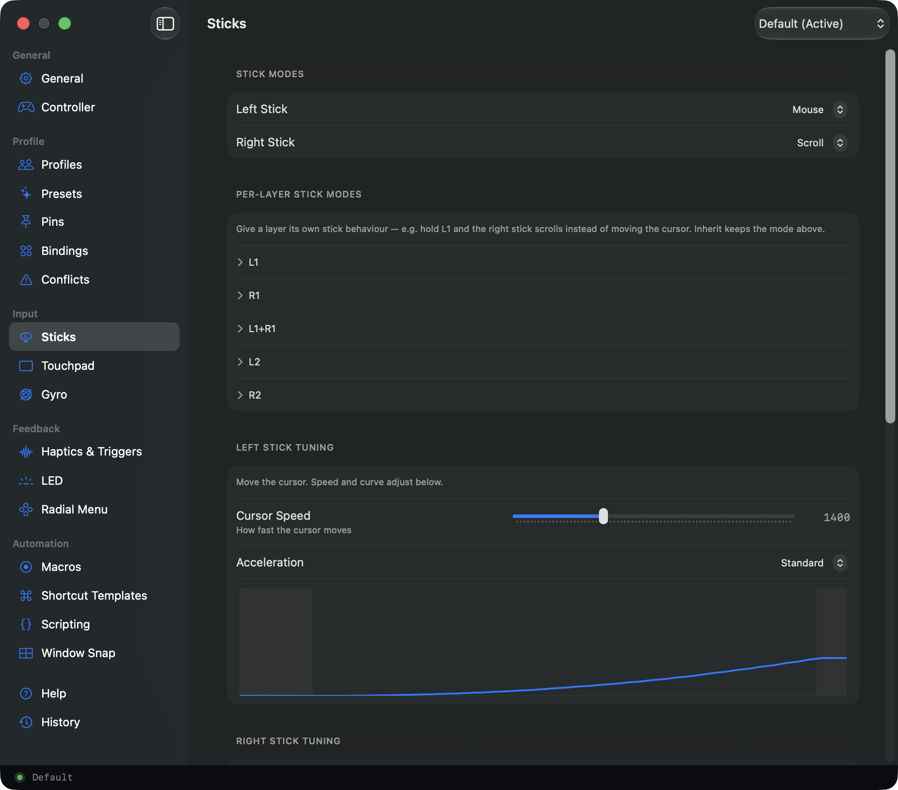

← Steer

Accessibility
When a mouse hurts, a controller doesn't.
A game controller rests in relaxed hands: no pinch grip, no fine wrist work, no reaching across the desk. If a mouse or trackpad is tiring, painful, or hard to reach, Steer turns the controller into a complete way to run your Mac: point, click, type, and scroll, with a cursor you can slow right down.
When it ships there is a 14-day free trial: no account, no card. Try it on a good day and a hard one before you decide.
